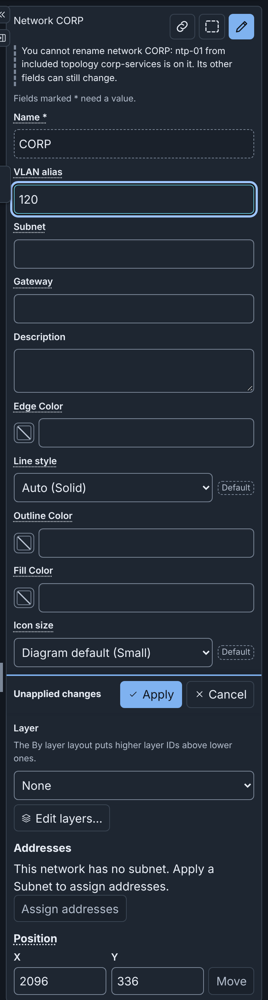
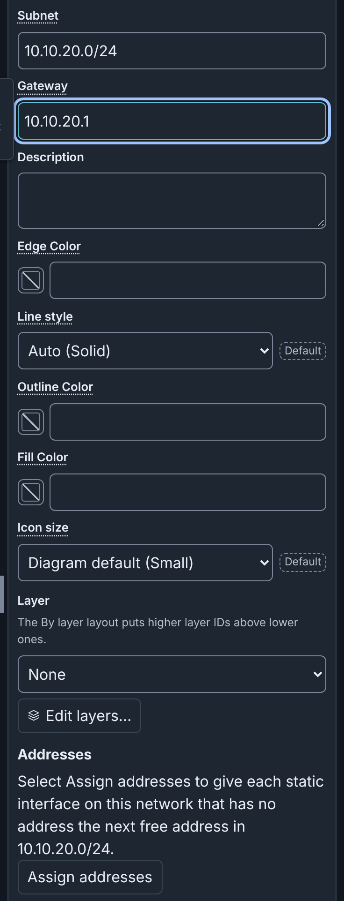
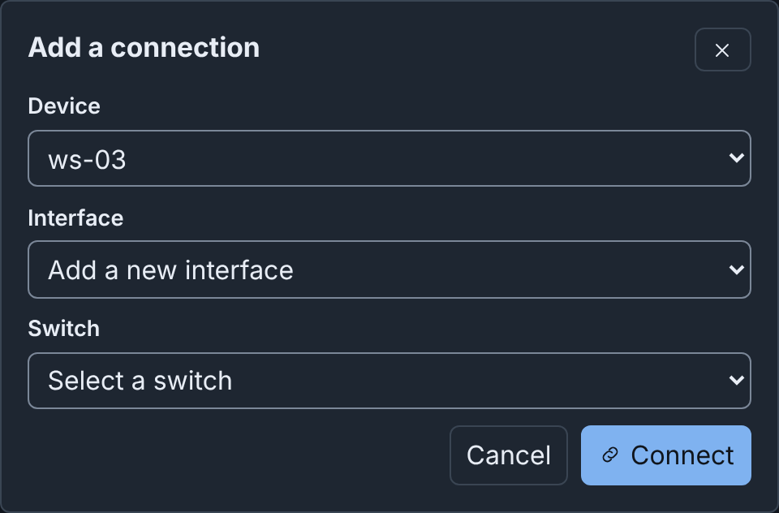
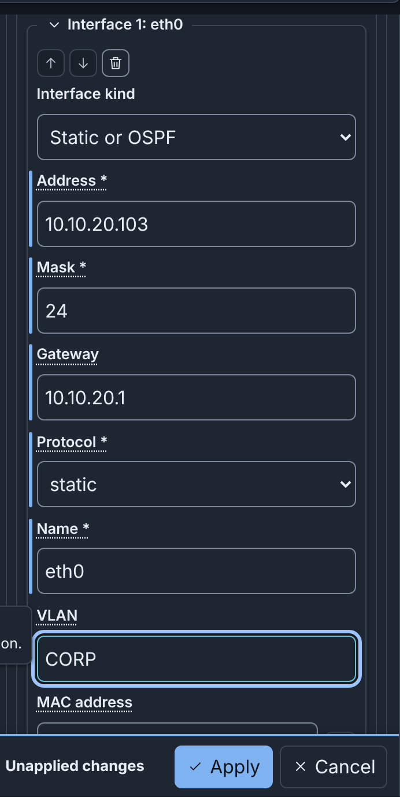
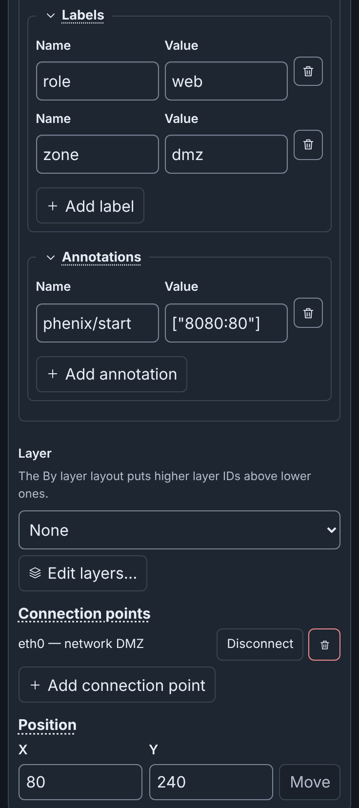
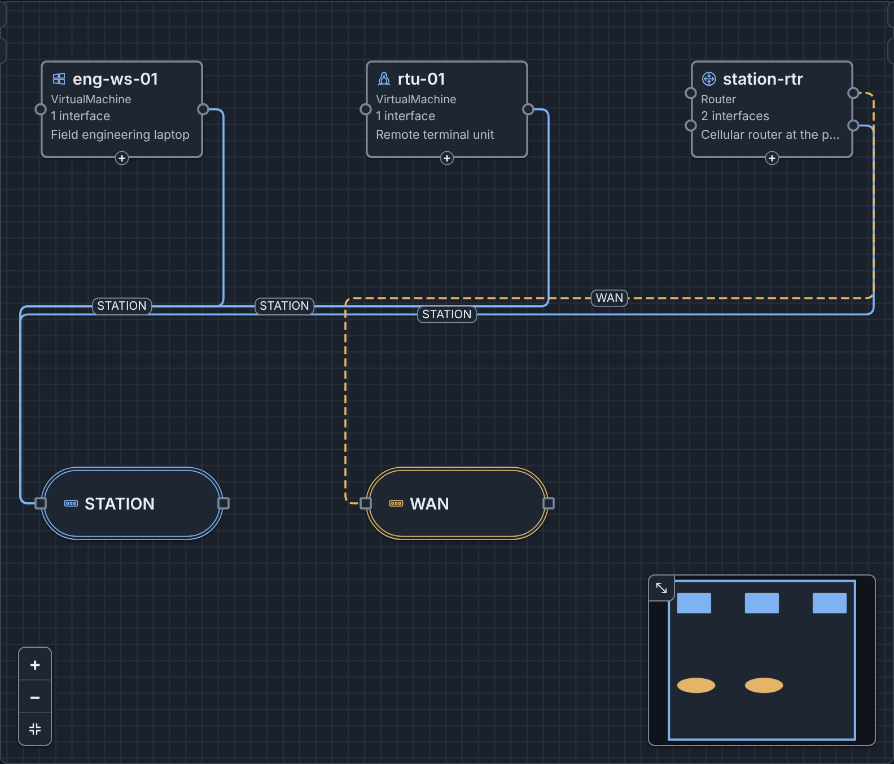
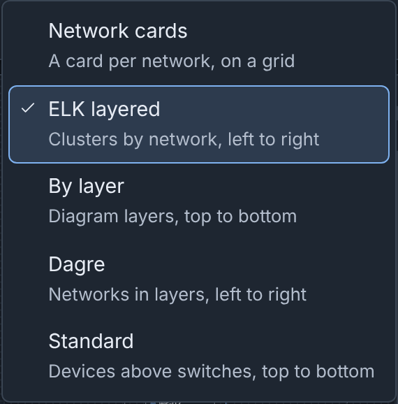
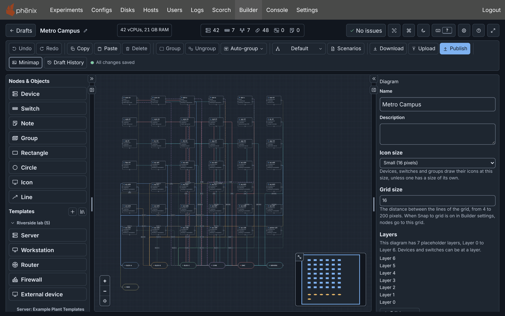
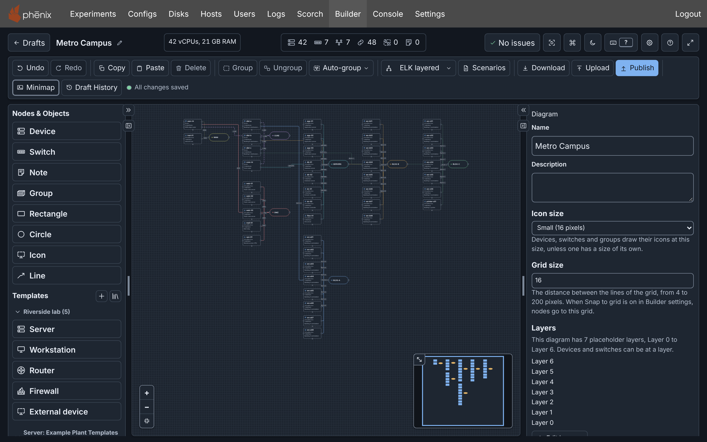

Building a Diagram: details¶
Info
This page holds every rule, limit and message of this feature. For the short guide, see Diagrams.
This page shows how to draw and change a diagram. For the parts of the editor, see The Editor. Icons, Layers and Scenarios and Included Topologies have their own pages. The examples use the Riverside Water draft of the example lab.
Devices, switches and connections¶
A diagram describes one phenix Topology config:
| In the diagram | In the published Topology |
|---|---|
| A device | A node in spec.nodes, with its settings |
| A switch | A network. Its name is the VLAN of each interface on it |
| A connection from a device to a switch | An interface of the device, with the network's name as its vlan |
| A device from an included topology | Nothing: includeTopologies names that topology |
| Notes, groups, shapes, icons, lines, colors, line styles, icon sizes, custom icons, layers and the diagram's templates | Nothing |
Adding devices¶
To add a device from Nodes & Objects, at the top of the left column, do one of these steps:
- Click the item. The device appears in free space in the visible part of the canvas, or outside it when that part is full. Builder selects it.
- Drag the item to the canvas.
- In the command palette (⌘+K/Ctrl+K), choose Add device, then select a template.
Device adds a device with default settings. The templates under Templates set more settings. The table lists the Device item and the five built-in templates, which the Built-in section always lists:
| Item | Hostname | Type | OS type | Image |
|---|---|---|---|---|
| Device | node | VirtualMachine | linux | ubuntu.qc2 |
| Server | server | VirtualMachine | linux | ubuntu.qc2 |
| Workstation | workstation | VirtualMachine | windows | windows10.qc2 |
| Router | router | Router | minirouter | minirouter.qc2 |
| Firewall | firewall | Firewall | vyos | vyos.qc2 |
| External device | external | HIL (external) | None | None |
The built-in templates are read only. To change one, duplicate it into the template library of the server (see Node Templates).
To add an engineering workstation to Riverside Water:
- Under Templates, click Workstation.
- In the Inspector, set Hostname to
ws-03and Description toCAD workstation. - Click Apply.
Routers and firewalls¶
The vrouter app configures the interfaces, routes and
rulesets of a device of type Router or Firewall (see
vrouter App). For a VyOS router, such as
edge-rtr, set OS type to vyos and the drive's Image to vyos.qc2.
External devices¶
An external device is hardware that the experiment connects to, such as a PLC. phenix starts no VM for it, so it has no image. Its interfaces tell phenix which VLANs the hardware is on (see External Nodes).
Adding switches and networks¶
A switch is one network. To add a network:
- Under Nodes & Objects, click Switch, or choose Add switch in the command palette. A switch appears, with a new network named EXP, then EXP-2 and so on.
- In the Inspector, set Name, for example
SCADA, and click Apply.
When you rename a network, the VLAN of each interface on it changes.
A switch's outline has the color of its network's connections, unless the switch has its own Outline Color (see Colors). A screen reader names the switch, its network and its VLAN alias.
The Inspector of a switch has these network fields:
- VLAN alias: optional, from 1 to 4094. When you publish with an
experiment, it becomes the network's entry in
vlans.aliases(see Publishing a topology and an experiment). - Subnet: an optional IPv4 network in CIDR form, such as
10.1.0.0/24. - Gateway: an optional IPv4 address of the router on the network. It
must be a host address of the subnet, such as
10.1.0.1in10.1.0.0/24.

To find a network, type # in the command palette. Remove network in
the command palette deletes a network, its switches and their connections.
A network can have more than one switch, for example after a paste.
When you delete the last switch of a network, Builder deletes the network in the same edit. Undo restores both. The network stays when the VLAN of an interface with no connection still names it. The checks then warn that the network has no switch. To correct this, add a switch, change the VLAN, or use Remove network. A diagram that you open or upload keeps all its networks.
Subnets and addresses¶
Builder uses a network's Subnet and Gateway to give addresses to the static interfaces on the network. A static interface has the Interface kind Static or OSPF. Builder gives an address only to a static interface that has no address. It never changes an address that an interface has, or a device from an included topology.
An assigned address is the next free host address of the subnet. A free
address is not the gateway, and no other interface on the network uses it.
The interface also gets the subnet's prefix length as its Mask. When
the interface has no Gateway, it gets the network's gateway. For
example, with the subnet 10.1.0.0/24 and the gateway 10.1.0.1, the
first interface gets 10.1.0.2, mask 24 and gateway 10.1.0.1.
A router holds the gateway. Here, a router is a device of type Router or Firewall. Router interfaces get their addresses first, and never get a Gateway of their own:
- When no interface on the network has the gateway address, the first router interface gets it.
- When the network has no gateway, the first router interface gets the next free address. That address becomes the network's Gateway in the same step, and the interfaces after it get that gateway.
- Other router interfaces get the next free addresses.
A new network gets a suggested subnet. It is the first 10.N.M.0/24 that
overlaps no subnet of the diagram. It also holds no interface or gateway
address of the diagram. In an empty diagram, that is 10.1.0.0/24. You can change
or clear it. A network that you import or upload keeps its own subnet, or
has none.
Builder gives addresses at these times:
- When you connect a static interface to a switch of the network: with a drag, with Add a connection, or with Paste or Duplicate of a device and its switch. After a drag or Add a connection, Builder says the address, for example "Set the address of eth0 of ws-03 to 10.1.0.2/24."
- When you click Assign addresses in the Inspector of a switch, or choose it and the network in the command palette. This is one step of Undo, for example "Assigned 3 addresses on network SCADA".

The Assign addresses on connect setting, in the Editing section of Settings, is on by default. When it is off, a connection, paste or duplicate gives no address. After a drag or Add a connection, Builder then says "No address set. Type an address for eth0 of ws-03 in the Inspector, or select Assign addresses." Assign addresses and the suggested subnet work with the setting on or off.
A network without a subnet gives no address. When you connect a static interface to it, Builder says "No address set: network CORP has no subnet. Type an address for eth0 of ws-03 in the Inspector." Assign addresses is then not available. When the subnet is full, Builder says, for example, "No address set: subnet 10.1.0.0/30 of network SCADA is full."
A static interface without an address stops Apply of its device.
Connecting interfaces¶
A connection puts a device's interface on a network. Each example below
connects ws-03 to CORP. CORP has no subnet, so eth0 gets no address. Type
its address in the Inspector, for example 10.10.20.103, or give CORP a
subnet first.
Drag on the canvas¶
- Point at ws-03. Each interface has a connection point (a circle) on the device's sides. A + handle is at its bottom.
- Drag from the + handle, or from an unconnected connection point, to the CORP switch.
A drag from + adds a new static interface. A published diagram and a device from an included topology have no + handle.
A drag from one device to another adds a switch between them, with a new network named EXP and a suggested subnet. You cannot connect two switches, because each switch is one network.
Add a connection without dragging¶
- Select a device or a switch.
- Click Add connection (the link button) in the Inspector header, or choose Add a connection… in the command palette. The dialog opens with the selection filled in.
- In Device, choose
ws-03. - Keep Interface set to Add a new interface, or choose an interface that has no connection.
- In Switch, choose CORP (CORP).
- Click Connect.
The command has no default key (see Customizing shortcuts).

The dialog stays open in these cases:
- A field is empty. Connect names it and moves focus to it.
- Builder cannot make the connection. The dialog says why.
Type the VLAN in the Inspector¶
When you apply a network's name in an interface's VLAN field, Builder connects the interface to that network's switch. The quick start connects ws-03 this way:
- Select ws-03.
- In the Inspector, under Network, click Add interface. The new
interface eth0 is Static or OSPF, with Mask
24. - Enter Address
10.10.20.103and Gateway10.10.20.1. - Enter VLAN
CORP. - Click Apply. Draft History names the change "Updated device ws-03 and connected eth0 to network CORP".

The VLAN matches a network's name in any letter case. The name of another network moves the connection. A VLAN that names no network stays, but the interface stays unconnected. A typed VLAN gives no address.
A renamed interface keeps its connection while its VLAN names the same network. When you remove one interface and add another in the same Apply, the new interface does not get the old connection. It connects only when its VLAN names a network.
Disconnecting¶
To disconnect an interface, do one of these steps:
- In the Inspector's Connection points, click Disconnect next to the interface, for example "eth0 — network CORP".
- Select the connection on the canvas and press ⌫ on macOS or Delete on Windows and Linux.
The interface stays, with no VLAN, and blocks publishing (see What blocks publishing). Connect it again, type a VLAN, or remove it with Remove connection point (the trash button). Add connection point adds a static interface with no connection and no address. The buttons under Connection points take effect at once, without Apply.
Hiding connections¶
To hide the connections on your canvas, choose Hide connections in the command palette, or press ⌥+⇧+C (Alt+Shift+C) outside a text field. The same command, now Show connections, shows them again. The Show connections switch in Settings does the same.
This changes only your canvas. This browser keeps your choice for the next diagram. The diagram, its checks, Publish and the downloads keep every connection: a PNG or SVG still draws them. While connections are hidden:
- You cannot click, select or focus a connection. Select all selects only nodes.
- Go to on an issue about a connection selects the node it starts at.
- The marks of connections with errors or warnings do not show.
- A drag from a connection point still connects it.
- PgDn and PgUp do not move through connections.
Editing device settings¶
Change the fields of a device in the Inspector or the Node Editor, then click Apply (see Editing a node).
An interface has an Interface kind:
- Static or OSPF: an address that you give, or that Builder gives from
the subnet. A new interface is this kind, with Mask
24. When you add an interface in the Inspector, focus goes to its Address. - DHCP or manual: the address comes from DHCP, or from a setting inside the VM.
- Serial: a serial link.
An interface of an external device has no Interface kind. It is a
static interface with Mask 24.
When you change the kind, Builder asks, for example, "Switch Interface kind to DHCP or manual?" Switch and clear changes the kind and empties all fields of that interface, Name and VLAN included. Keep current value changes nothing. Set the kind first.
A device shows its Description on the canvas. The eye button beside the field hides it (see Hiding descriptions on the canvas).
Generate a random MAC address, beside MAC address, writes a locally administered unicast address that no other interface of the diagram uses. Click Apply to keep it.
Duplicating a device¶
Duplicate pastes a copy of the selected nodes next to them (see Copy, paste, duplicate and delete). The copy keeps every setting, addresses included, but not its connections.
To add a second historian:
- Select historian-01.
- Press ⌘+D (Ctrl+D). The copy historian-01-2 appears, with the address 10.10.30.20 and an unconnected eth0.
The header then says 1 warning: eth0 of historian-01-2 has no VLAN. When the copy's eth0 is on the network of historian-01, the shared address is also a warning. To correct the warning, give the copy its own hostname and address, and connect it (see Example: Riverside Water expansion).
Drive images¶
When your role can list the disk images of the server, a drive's Image suggests them, and an image that the server does not have is a warning. When the server lists no images, the checks do not examine images.
Routes and rulesets¶
Routes and Firewall rulesets are under Network. For example:
- edge-rtr has Route 1: 10.10.30.0/24: Destination
10.10.30.0/24, Next hop10.10.20.254(ot-fw) and Cost1. - ot-fw has Firewall ruleset 1: corp-to-ot, with Default
dropand Rule 1: HTTPS to the historian. The rule acceptstcpfrom10.10.20.0/24to10.10.30.20port443. The Inbound ruleset of eth0 iscorp-to-ot.
The vrouter app applies them when the experiment starts. Inbound
ruleset and Outbound ruleset suggest the names of the device's
rulesets, unapplied ones included. The app applies rulesets only on a
Router or a Firewall, and skips a ruleset name that the device does not
have. The checks warn about both cases (see
Rulesets and addresses).
miniccc commands, under More settings, lists the commands that
phenix gives miniccc to run in the VM, such as exec df -h.
Labels and annotations¶
A device's labels and annotations are under More settings. Each row has
a Name and a Value. For example, web-01 has the labels zone: dmz
and role: web, and the annotation phenix/startup-autotunnel with the
value ["8080:80"]:

Builder reads an annotation value as YAML: true, false and numbers
become those values, and ["8080:80"] is a list. Apps read annotations to
configure a node (see Apps).
Notes¶
A note is text on the canvas. Publishing ignores it.
- Under Nodes & Objects, click Note.
- In the Inspector, enter the Text, for example
OT has no route to the internet. - Click Apply.
A screen reader names a note by the start of its text. A note also has a Color.
Groups¶
A group is a box with a title around nodes. Publishing ignores it. When you move a group, its nodes move with it.
To group nodes:
- Click the first node, then Shift-click the others.
- Click Group in the toolbar, or press ⌘+G on macOS or Ctrl+G on Windows and Linux.
The new group is "Group", or "Group 2" and so on when that name is in use. Its Inspector has Title, Description, Color, Border pattern, Icon and Icon size:
- The Description shows on one line under the title. Screen readers read it after the group's name.
- Border pattern is Dashed (the default), Solid, Dotted or Double.
- Icon is beside the title. It is the container icon by default.
- Title and Description wait for Apply. The other fields take effect at once.
To remove a group and keep its nodes in place, select the group, then click Ungroup (⇧+⌘+G or Ctrl+Shift+G).
Group under Nodes & Objects adds an empty group. A node that you drag onto a group does not go into it. To move a node into a group:
- Select the node.
- Click Move to group (the group button) in the Inspector header, or choose Move to a group… in the command palette.
- In Group, choose a group, or No group to remove the node from its group.
- Click Move.
To resize a selected group or note, drag the handles on its corners and sides, or press ⌥+⇧ (Alt+Shift) with an arrow key. One press, or one hold, is one undo step. A group is never smaller than its members need.
Shapes, icons and lines¶
Rectangles, circles, icons and lines are drawings. Publishing ignores them, and they take no connections. Add one under Nodes & Objects or in the command palette. The layouts do not move a drawing. A drawing in a group moves with its group. When a layout makes the group smaller, the group grows to hold the drawing.

The Inspector of a drawing has these fields:
- A rectangle or a circle fills its box, so a circle in a box that is not square is an ellipse. It has a Label at its center, a Fill Color (without one, it is see-through), an Outline Color, a Border pattern (Solid by default), a Width and a Height.
- An icon shows a built-in or custom icon, scaled to its box. It has an optional Label under it, a Width and a Height.
- A line joins no node or network. It has a Label at its middle, a Color and a Line style (solid by default). It has Arrowhead at the start and Arrowhead at the end. Its Points, 2 to 64 from start to end, each have an X and a Y. A new line is 160 pixels long.
Some fields take effect at once (see Fields that take effect at once). The others wait for Apply.
Rectangles, circles and lines stay under the devices and switches, also when selected. Thus, a drawing never hides a device or its connection points.
To resize a selected rectangle, circle or icon, drag its handles, or press ⌥+⇧ (Alt+Shift) with an arrow key. A selected line shows a circle handle on each end and a square handle on each bend. Drag a handle to move its point. Double-click the line to add a bend. While Snap to grid is on, a dragged point and a new bend go to the grid. After you click a handle:
- The arrow keys move its point by one grid step, or one pixel with ⇧.
- Delete or Backspace removes the point. A line keeps at least two points.
- Esc goes back to the line.
Without a mouse, use Points in the Inspector: change X and Y, or use Add point (a new end), Remove point N and Insert point after point N (a bend halfway to the next point). Apply makes all the changes as one step of Undo.
Auto-group¶
Auto-group in the toolbar puts nodes into new groups:
- By network: each network's switch with its devices. A device on several networks goes with the smallest one.
- By name: devices whose hostnames share a stem, such as web-01 and web-02. Switches stay out.
- By name pattern…: nodes whose names match a regular expression.
Auto-group groups only the devices and switches that are in no group. When nodes are selected, it groups only those. A group needs at least two members. Then Auto-group arranges the diagram with the draft's layout, so the groups do not overlap. Undo removes the groups.
For example, By network on the imported riverside-water makes the groups CORP, DMZ, INTERNET and OT.
Each choice is also a command palette command, such as Auto-group by network, which has a key (see Keyboard shortcuts).
Grouping by a name pattern¶
- In Auto-group, select By name pattern….
- In Name pattern, type a JavaScript regular expression.
- Click Group.
Builder matches the pattern against each device hostname and switch name, and ignores letter case. Names with the same matched text go in one group, named after that text. When the pattern has parentheses, Builder uses the text of the first pair. For example:
^[a-z]+puts web-01 and web-02 in group web, and db-01 and db-02 in group db.^(\w+)-(east|west)groups by the part of the name before the site.-(\d)\d$groups by the tens digit of the number at the end.
The rules of Auto-group apply. Limits:
- A pattern has at most 200 characters.
- Builder matches only the first 255 characters of a name.
- A group's name is cut to 80 characters.
- Builder stops a pattern that takes more than 2 seconds, with "This pattern takes too long to match. Use a simpler one."
When nothing can be grouped, the dialog says why, for example "Nothing to group: the pattern matches no ungrouped device or switch." The dialog offers your last pattern. The browser keeps it until you log out. Builder does not save it in the diagram or send it to the server.
When the pattern cannot run, the dialog says "The Builder could not check the pattern. Reload the page to try again." (see Troubleshooting).
Colors¶
| Where | Field | What it colors | Values |
|---|---|---|---|
| Switch | Edge Color | The network: its connections, and the outline of its switches | Any CSS color |
| Connection | Color | This connection, in place of its network's color | Any CSS color |
| Device, switch | Outline Color | The node's border | #rrggbb only |
| Device, switch | Fill Color | The node's background | #rrggbb only |
| Note, group | Color | The note or the group | Any CSS color |
| Rectangle, circle | Outline Color, Fill Color | The shape's border and inside | #rrggbb only |
| Line | Color | The line and its arrowheads | #rrggbb only |
To set a color, type it in the field, or click the swatch button before the field. The swatch offers Blue, Orange, Green, Purple, Red, Teal, Olive, Plum, Custom color and No color. Esc closes only the color choices, not a dialog such as the Node Editor.
A #rrggbb field takes no color names, no short form and no transparency.
Another value shows "Outline Color must be a hex color, such as #2f6fbf"
(or "Fill Color …"), and Builder does not apply it. The Outline Color
and Fill Color of a switch belong to that switch, so two switches of
one network can be different. Each color field takes effect at once.
On a fill, the text is black or white, for a contrast of at least 4.5 to 1. An outline near the canvas color gets a thin ring, so the node stays visible in both themes. In a Windows contrast theme (forced colors), Builder shows the system colors.
The outline of a device or a switch has the first of these colors:
- The node's own Outline Color.
- The color of its layer, when the diagram colors node outlines with the layer color (see Layer outlines).
- For a switch, the color of its network's connections.
The built-in icon of a device or a switch has the color of the node's outline, or the theme's accent color without one. A group icon always has the accent color. When the outline has a contrast of less than 3 to 1 against the node in a theme, the icon has the node's text color in that theme. On a Fill Color, the icon has the node's text color, unless the outline is a hex color with a contrast of at least 3 to 1 against the fill.
A new network gets the suggested color that the fewest networks use. The suggested colors keep their contrast in both themes.
Line styles¶
Line style sets the line pattern on a network, for all its connections, or on one connection, in place of its network's pattern:
- Auto: Builder selects the pattern from the network's place in the diagram, so that networks are different without color. The choice names that pattern, for example "Auto (Solid)". On a connection, Auto follows its network.
- Solid, Dashed, Dotted or Dash-dot.
A pattern can repeat on several networks. The connection's label, its switch and its name for screen readers still name its network. Line style takes effect at once.
Layouts¶
The layout menu in the toolbar arranges the whole diagram. It shows the layout that last arranged the draft, or Default when no layout ran. An imported, uploaded or blank draft starts at Default. An import puts its devices in rows on a grid, with the switches below them.

| Layout | What it does |
|---|---|
| Network cards | A card for each network, on a grid. In a card, the switch is at the head of a column of its devices, grouped by name. |
| ELK layered | Clusters each network's switch with its devices, a device on several networks in its smallest one. Connections run left to right between the clusters. |
| By layer | Puts the layers from top to bottom (see By layer). |
| Dagre | Each network's devices in a column beside their switch, and the networks in layers along the connections between them. |
| Standard | Every device in a row above the switches, from top to bottom. |
ELK layered suits most diagrams. A layout always gives the same result for the same diagram and the same selection. ELK layered and By layer load when you first use one of them. When they cannot load, the page shows "Auto layout failed. The Builder could not load the layout engine. Reload the page to try again."
Earlier versions of Builder also had the Yifan Hu, Force and Radial layouts. A draft that names one of them opens at Default. When your Default layout setting names one of them, Builder uses ELK layered.
Layouts keep groups together. A group's members stay inside it, and no other node goes in.
For example, Metro Campus
(metro-campus.topology.yaml)
has 42 devices on 7 networks. These images show
it after the import, then after ELK layered:


Right after a layout runs, the menu also offers Restore previous layout, until you make a different change.
Auto layout in the command palette, and its key (see Keyboard shortcuts), runs the draft's layout again. On a draft at Default, Auto layout and Auto-group use the Default layout of Settings, which is ELK layered by default.
Publishing and a Topology YAML download ignore positions and layouts.
By layer¶
By layer arranges the diagram from top to bottom by layer, the highest layer ID at the top. Only the IDs count, so an ID that is not in the diagram's list also works. Each connection goes down from the higher layer to the lower one.
- A device or a switch without a layer goes to the layer of the nearest connected node that has one. When two such nodes are equally near, it goes to the higher layer.
- A connected node that no layer reaches goes below every layer. A node without connections, such as a note, goes at the bottom.
- A group is at the layer of its highest member. Inside the group, its members are in the order of their layers.
In a diagram whose devices and switches have no layer, and inside one layer, the layout starts from a top node. Each other node goes below the node that leads to it from the top node. The top node is the first of these that the diagram has:
- The selected device or switch.
- A firewall.
- A router.
- The switch with the most connections.
The layout uses the icon or the node type to find a firewall or a router. An external device is a top node only when you select it, because hardware in the loop, such as a PLC, is usually low in a plant.
Arranging by hand¶
- Drag a node, or several selected nodes. While Snap to grid is on, they go to the grid. A press is a click, which does not move the nodes, while the pointer stays within 4 screen pixels of the start point. With a finger or a pen, the limit is 8 pixels. When Builder cannot take a move, for example while a save conflict is open, the nodes go back.
- Press ⇧ (Shift) with an arrow key to move the selected nodes 10 pixels. They do not snap to the grid. Hold the keys to move the nodes more. When you release a key, the move is one undo step. Screen readers announce the new position one time.
- Under Position in the Inspector, enter X and Y, then click Move.
A move by hand does not change the layout that the layout menu shows.
The grid¶
Grid size, in the Inspector with nothing selected, sets the distance between the grid lines: a whole number of pixels from 4 to 200. A new diagram has a grid size of 16. Another value shows "Grid size must be a whole number from 4 to 200.", and the diagram keeps its size.
The Snap to grid setting, in the Editing section of Settings, is off by default. While it is on, these go to the nearest point of the grid:
- Nodes that you drag, and nodes that you drop from Nodes & Objects.
- New nodes that you add.
- The points of a line that you drag or add.
While it is off, they go where you put them, on a whole pixel. This browser keeps the setting, and other users have their own. Snap to grid in the command palette turns it on or off.
Copy, paste, duplicate and delete¶
Copy, Paste and Delete are in the toolbar, and Duplicate is in the command palette. Each has a key (see Keyboard shortcuts).
Copy and Paste use the Builder clipboard, not the system clipboard. They work between drafts that you open one after the other in the same browser tab. Duplicate copies and pastes the selected nodes in one step, and does not change the Builder clipboard.
- A paste goes 40 pixels down and to the right of the original, and each next paste 40 pixels more. Builder selects the pasted nodes.
- A pasted device gets a free hostname, such as server-2, and keeps its settings.
- Builder pastes or duplicates a connection only with both of its nodes. Copy a device with its switch to keep the connection. With only connections selected, Duplicate does nothing and says "Select the nodes to duplicate. A copy holds a connection only with both of its nodes."
- Copying a group copies the nodes in it.
Delete deletes the selected nodes and connections. When you delete a device, Builder also deletes its connections.
Undo and redo¶
Undo and Redo in the toolbar, and their keys, go back and forward through your changes. Each change is a snapshot of the draft on the server, so Undo moves the draft itself back. Undo and Redo reach only the changes since you opened the draft in this tab, or since your last restore. To go back further, use Draft History.
After an undo, a new change removes the snapshots that you undid, also those that other users saved after them (see Newer snapshots).